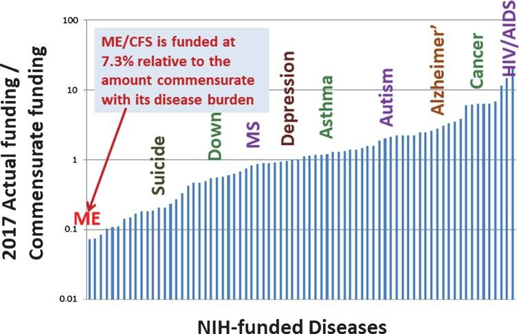

Experts warn that we are not prepared for the surge in disability due to long covid, an illness that afflicts between one-fourth and one-third of people who get covid, including mild cases, for months afterwards. Some early covid cases have been sick for 18 months, with no end in sight. The physiological damage that covid causes can include cognitive dysfunction and deficits, brain activity scans similar to those seen in Alzheimer’s patients, GI immune system damage, cornea damage, immune dysfunction, increased risk of kidney outcomes, dysfunction in T cell memory generation, pancreas damage, and ovarian failure. Children are at risk too.
As the evidence continues to mount of alarming long term physiological impacts of covid, and tens of millions are unable to return to work, we might expect leaders to take covid more seriously. Yet we are seeing concerted efforts to downplay the long-term health effects of covid using strategies straight out of the climate denial playbook, such as funding contrarian scientists, misleading petitions, social media bots, and disingenuous debate tactics that make the science seem murkier than it is. In many cases, these minimization efforts are being funded by the same billionaires and institutions that fund climate change denialism. Dealing with many millions of newly disabled people will be very expensive for governments, social service programs, private insurance companies, and others. Thus, many have a significant financial interest in distorting the science around long term effects of covid to minimize the perceived impact.
In topics ranging from covid-19 to HIV research to the long history of wrongly assuming women’s illnesses are psychosomatic, we have seen again and again that medicine, like all science, is political. This shows up in myriad ways, such as: who provides funding, who receives that funding, which questions get asked, how questions are framed, what data is recorded, what data is left out, what categories included, and whose suffering is counted.
Scientists often like to think of their work as perfectly objective, perfectly rational, free from any bias or influence. Yet by failing to acknowledge the reality that there is no “view from nowhere”, they miss their own blindspots and make themselves vulnerable to bad-faith attacks. As one climate scientist recounted of the last 3 decades, “We spent a long time thinking we were engaged in an argument about data and reason, but now we realize it’s a fight over money and power… They [climate change deniers] focused their lasers on the science and like cats we followed their pointer and their lead.”
The American Institute for Economic Research (AIER), a libertarian think tank funded by right wing billionaire Charles Koch which invests in fossil fuels, energy utilities, and tobacco, is best known for its research denying the climate crisis. In October 2020, a document called the Great Barrington Declaration (GBD) was developed at a private AIER retreat, calling for a “herd immunity” approach to covid, arguing against lockdowns, and suggesting that young, healthy people have little to worry about. The three scientists who authored the GBD have prestigious pedigrees and are politically well-connected, speaking to White House Officials and having found favor in the British government. One of them, Sunetra Gupta of Oxford, had released a wildly inaccurate paper in March 2020 claiming that up to 68% of the UK population had been exposed to covid, and that there were already significant levels of herd immunity to coronavirus in both the UK and Italy (again, this was in March 2020). Gupta received funding from billionaire conservative donors, Georg and Emily von Opel. Another one of the authors, Jay Bhattacharya of Stanford, co-authored a widely criticized pre-print in April 2020 that relied on a biased sampling method to “show” that 85 times more people in Santa Clara County California had already had covid compared to other estimates, and thus suggested that the fatality rate for covid was much lower than it truly is.
Half of the social media accounts advocating for herd immunity seem to be bots, characterized as engaging in abnormally high levels of retweets & low content diversity. An article in the BMJ recently advised that it is “critical for physicians, scientists, and public health officials to realize that they are not dealing with an orthodox scientific debate, but a well-funded sophisticated science denialist campaign based on ideological and corporate interests.”
This myth of perfect scientific objectivity positions modern medicine as completely distinct from a history where women were diagnosed with “hysteria” (roaming uterus) for a variety of symptoms, where Black men were denied syphilis treatment for decades as part of a “scientific study”, and multiple sclerosis was “called hysterical paralysis right up to the day they invented a CAT scan machine” and demyelination could be seen on brain scans.
However, there is not some sort of clean break where bias was eliminated and all unknowns were solved. Black patients, including children, still receive less pain medication than white patients for the same symptoms. Women are still more likely to have their physical symptoms dismissed as psychogenic. Nearly half of women with autoimmune disorders report being labeled as “chronic complainers” by their doctors in the 5 years (on average) they spend seeking a diagnosis. All this impacts what data is recorded in their charts, what symptoms are counted.
Medical data are not objective truths. Like all data, the context is critical. It can be missing, biased, and incorrect. It is filtered through the opinions of doctors. Even blood tests and imaging scans are filtered through the decisions of what tests to order, what types of scans to take, what accepted guidelines recommend, what technology currently exists. And the technology that exists depends on research and funding decisions stretching back decades, influenced by politics and cultural context.
One may hope that in 10 years we will have clearer diagnostic tests for some illnesses which remain contested now, just as the ability to identify multiple sclerosis improved with better imaging. In the meantime, we should listen to patients and trust in their ability to explain their own experiences, even if science can’t fully understand them yet.
Science does not just progress inevitably, independent of funding and politics and framing and biases. A self-fulfilling prophecy often occurs in which doctors:
- label a new, poorly understood, multi-system disease as psychogenic,
- use this as justification to not invest much funding into researching physiological origins,
- and then point to the lack of evidence as a reason why the illness must be psychogenic.
This is largely the experience of ME/CFS patients over the last several decades. Myalgic encephalomyelitis (ME/CFS), involves dysfunction of the immune system, autonomic systems, and energy metabolism (including mitochondrial dysfunction, hypoacetylation, reduced oxygen uptake, and impaired oxygen delivery). ME/CFS is more debilitating than many chronic diseases, including chronic renal failure, lung cancer, stroke, and type-2 diabetes. It is estimated 25–29% of patients are homebound or bedbound. ME/CFS is often triggered by viral infections, so it is not surprising that we are seeing some overlap between ME/CFS and long covid. ME/CFS disproportionately impacts women, and a now discredited 1970 paper identified a major outbreak in 1958 amongst nurses at a British hospital as “epidemic hysteria”. This early narrative of ME/CFS as psychogenic has been difficult to shake. Even as evidence continues to accumulate of immune, metabolic, and autonomous system dysfunction, some doctors persist in believing that ME/CFS must be psychogenic. It has remained woefully underfunded: from 2013-2017, NIH funding was only at 7.3% relative commensurate to its disease burden. Note that the below graph is on a log scale: ME/CFS is at 7%, Depression and asthma are at 100% and diseases like cancer and HIV are closer to 1000%.

Portraying patients as unscientific and irrational is the other side of the same coin for the myth that medicine is perfectly rational. Patients that disagree with having symptoms they know are physiological dismissed as psychogenic, that reject treatments from flawed studies, or who distrust medical institutions based on their experiences of racism, sexism, and mis-diagnosis, are labeled as “militant” or “irrational”, and placed in the same category with conspiracy theorists and those peddling disinformation.
On an individual level, receiving a psychological misdiagnosis lengthens the time it will take to get the right diagnosis, since many doctors will stop looking for physiological explanations. A study of 12,000 rare disease patients covered by the BBC found that “while being misdiagnosed with the wrong physical disease doubled the time it took to get to the right diagnosis, getting a psychological misdiagnosis extended it even more – by 2.5 up to 14 times, depending on the disease.” This dynamic holds true at the disease level as well: once a disease is mis-labeled as psychogenic, many doctors will stop looking for physiological origins.
We are seeing increasing efforts to dismiss long covid as psychogenic in high profile platforms such as the WSJ and New Yorker. The New Yorker’s first feature article on long covid, published last month, neglected to interview any clinicians who treat long covid patients nor to cite the abundant research on how covid causes damage to many organ systems, yet interviewed several doctors in unrelated fields who claim long covid is psychogenic. In response to a patient’s assertion that covid impacts the brain, the author spent an entire paragraph detailing how there is currently no evidence that covid crosses the blood-brain barrier, but didn’t mention the research on covid patients finding cognitive dysfunction and deficits, PET scans similar to those seen in Alzheimer’s patients, neurological damage, and shrinking grey matter. This leaves a general audience with the mistaken impression that it is unproven whether covid impacts the brain, and is a familiar tactic from bad-faith science debates.
The New Yorker article set up a strict dichotomy between long covid patients and doctors, suggesting that patients harbor a “disregard for expertise”; are less “concerned about what is and isn’t supported by evidence”; and are overly “impatient.” In contrast, doctors appreciate the “careful study design, methodical data analysis, and the skeptical interpretation of results” that medicine requires. Of course, this is a false dichotomy: many patients are more knowledgeable about the latest research than their doctors, some patients are publishing in peer-reviewed journals, and there are many medical doctors that are also patients. And on the other hand, doctors are just as prone as the rest of us to biases, blind spots, and institutional errors.
In 1987, 40,000 Americans had already died of AIDS, yet the government and pharmaceutical companies were doing little to address this health crisis. AIDS was heavily stigmatized, federal spending was minimal, and pharmaceutical companies lacked urgency. The activists of ACT UP used a two pronged approach: creative and confrontational acts of protest, and informed scientific proposals. When the FDA refused to even discuss giving AIDS patients access to experimental drugs, ACT UP protested at their headquarters, blocking entrances and lying down in front of the building with tombstones saying “Killed by the FDA”. This opened up discussions, and ACT UP offered viable scientific proposals, such as switching from the current approach of conducting drug trials on a small group of people over a long time, and instead testing a large group of people over a short time, radically speeding up the pace at which progress occurred. ACT UP used similar tactics to protest the NIH and pharmaceutical companies, demanding research on how to treat the opportunistic infections that killed AIDS patients, not solely research for a cure. The huge progress that has happened in HIV/AIDS research and treatment would not have happened without the efforts of ACT UP.
Across the world, we are at a pivotal time in determining how societies and governments will deal with the masses of newly disabled people due to long covid. Narratives that take hold early often have disproportionate staying power. Will we inaccurately label long covid as psychogenic, primarily invest in psychiatric research that can’t address the well-documented physiological damage caused by covid, and financially abandon the patients who are now unable to work? Or will we take the chance to transform medicine to better recognize the lived experiences and knowledge of patients, to center patient partnerships in biomedical research for complex and multi-system diseases, and strengthen inadequate disability support and services to improve life for all people with disabilities? The decisions we collectively make now on these questions will have reverberations for decades to come.